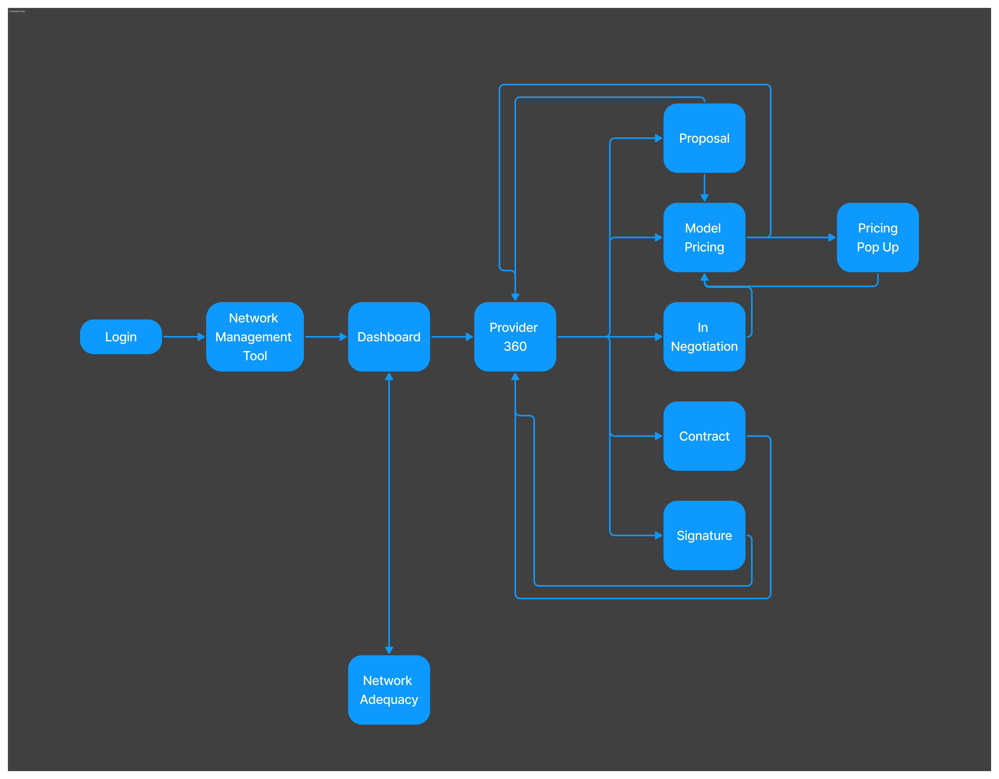
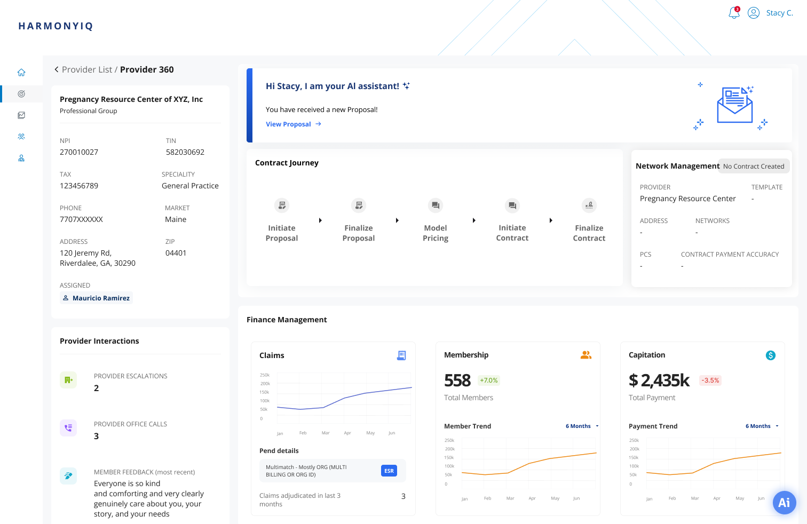

Proposing blind
Rates were set with no visibility into what competing payers were offering for the same providers.
AI-powered contract intelligence for US health plans — turning a weeks-long negotiation process into something a contract manager could actually trust.
Read the case study ↓
THE BRIEF
Healthcare provider contract management is dense. Rates, compliance, network adequacy, renewal cycles — all interconnected, all high-stakes. I joined as PD1 on a team building an AI intelligence layer on top of this.
Before I could design anything useful, I needed to understand what contract managers actually did with their days — not what the brief said they did. Thirty-plus interviews later, the real problem came into focus.
My scope: own user research, ground every design decision in clinical workflow reality, and make sure every screen held up to WCAG 2.1 AA — because a healthcare tool that isn't accessible isn't a healthcare tool.
WHAT THE RESEARCH FOUND
The problems weren't abstract. They came up in the same forms across every interview, across every market.
Rates were set with no visibility into what competing payers were offering for the same providers.
Word for proposals. Excel for tracking. Email for iteration. No version history. No audit trail.
Claims history, member trends, and quality scores lived in three separate systems. Pulling them together took days.
When contract terms and actual claims weren't aligned, providers got reimbursed incorrectly. Nobody had an easy way to catch it.
Stakeholders chased sign-offs over email. No flow, no timestamps, no accountability.
ARCHITECTURE
Once the interviews were synthesised, we mapped the complete contract lifecycle end to end. That diagram became our shared language — with the team and with stakeholders — for the entire project. Three distinct personas emerged from it, each with non-overlapping needs.

Benchmark data, AI-recommended strategy, and a complete picture of the provider — before a single word of negotiation.
Full version history, timestamped approvals, traceable edits. If it happened, it has to be findable.
Where is this contract, who has it, what's blocking it — in one view, updated in real time.
THE WORK
Five screens for five stages. The guiding constraint throughout: the contract manager should always know what the right next action is, and why. WCAG 2.1 AA on every component, every state.
PROVIDER 360
The entry point for every negotiation. Before any proposal starts, the contract manager sees the provider's complete picture — AI-flagged alerts, where the contract currently sits in its lifecycle, the financial relationship, and the full interaction history. No more going in blind.

What needs attention this week — surfaced by the AI before the manager asks.
The current stage in the lifecycle, visible at a glance for every provider.
Escalations, calls, member feedback — in context where they're actually useful.
INITIATE PROPOSAL
Built around how contract managers actually draft — not how a PM imagined they did. A structured proposal editor with embedded rate tables, sitting next to an AI panel that surfaces a recommended strategy, surfaces known friction with this provider, and shows competitive benchmark data in real time.
AI suggests a rate with its reasoning. Accept, reject, or come in with your own number.
Past billing disputes, escalations, known issues — visible before the proposal is sent.
Proposed reimbursement figures sit inside the proposal itself — not in a separate tab.
MODEL PRICING
Pricing decisions don't happen in a vacuum. This screen lets contract managers run up to three scenarios in parallel — baseline against two variants — each one showing projected reimbursement and real-time risk positioning relative to the contracting strategy.
Baseline vs variant 1 vs variant 2, with variance from baseline shown for each.
Elevance, UHC, Aetna, Cigna — where does this proposal sit against peer payers.
Pick a scenario, watch the risk position update. Every decision has a visible consequence.
FINALISE, DRAFT & SIGN
After a scenario is selected, the AI recalculates the overall risk position and auto-populates the contract with NPI data it has verified against public sources. The result: a fully drafted, reviewable contract ready for provider signature — with a complete edit history from day one.
Every change is re-evaluated before the contract moves forward.
Provider details auto-populated from verified public sources. Twelve fields filled; eight flagged for human review.
Every version, every edit, every signature timestamped. A process that used to take weeks, closed in one session.
DESIGN DECISIONS
INSTEAD OF
“Recommended rate: $X.” Accept or ignore.
WE USED
Moving the slider makes the downstream risk visible. Every proposal becomes a strategic decision, not a field to fill.
INSTEAD OF
A clean slate per proposal. Past disputes are the past.
WE USED
Knowing a provider has a billing dispute history changes how you walk into a renewal. That context is too valuable to hide.
INSTEAD OF
AI lives in one place. You go there when you want it.
WE USED
In the proposal editor, inside pricing simulation, within the draft. Always present, never a detour.
INSTEAD OF
Let the AI fill everything. Move faster. Trust it.
WE USED
12 fields filled from verified sources. 8 fields flagged for human confirmation. Trust is built through transparency, not magic.
REFLECTION
The 30+ interviews weren't prep work before the real design started. They were the design. The architecture, the AI touchpoints, the persona logic — all of it came directly from what people said in those sessions.
Building WCAG 2.1 AA into the component library from day one — rather than auditing at the end — meant we never had to retrofit. The compliance lead persona made this non-negotiable: an inaccessible audit trail defeats the point.
Healthcare professionals don't accept black-box outputs. Every recommendation needed to show its logic. Users who could see why the AI suggested something trusted it significantly more than users who just saw the output.
The system architecture built in the first two weeks set the ceiling for everything designed afterward. Getting that right — or wrong — compounds with every screen.
OUTCOME
Contract stages brought into one platform
Providers across the US healthcare market
Interviews driving every design decision
WCAG 2.1 compliance across the full platform
Back to the portfolio
See selected work →